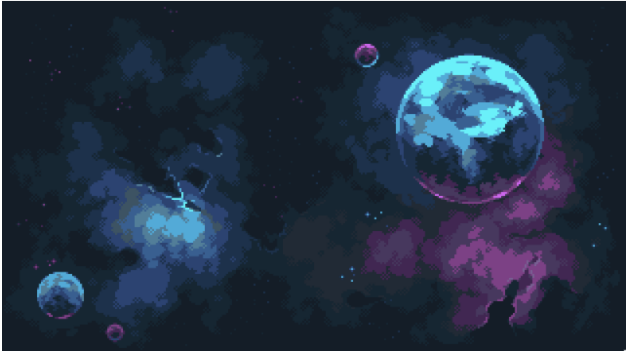
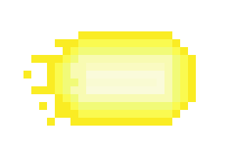
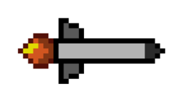

Back to Documentation
Aman Swaroop, Kuzey Gok, Myles Dalton
UWB CSS 452 | Professor Kelvin Sung
03/11/2022
Projectile Systems SDK Tutorial
- Setting up the environment
The first step to setting up the environment is picking out a few images that you would like to use for the
projectile and trail renderables. Once you have those selected, then you can use the texture engine to load them in.
This can be accomplished by doing the following:

The picture above is of the background that we will be using throughout the project. For simplicity, we will be
calling the file that we are storing this in bg.png, and the variable associated with it
kBg, such that
this.kBg = “assets/bg.png”; // Save all your images in the assets
folder associated with your project.

This picture above is of the projectile's trail that we will be using throughout the project. For simplicity, we
will be calling the file that we are storing this in bullet_trail.png, and the variable associated
with it
kT, such that
this.kTrail = “assets/bullet_trail.png”;

This picture above is of the projectile's trail that we will be using throughout the project. For simplicity, we
will be calling the file that we are storing this in missile.png, and the variable
associated with it kMissile, such that
this.kMissile = “assets/missile.png”;
- Loading textures
Once you have found the pictures that you are going to use throughout the project, the next step that must be done
is the loading of the images. This can be done with the following lines of code inside of the draw function in
my_game.js.
engine.texture.load(this.kBg);
engine.texture.load(this.kT);
engine.texture.load(this.kMissile);
NOTE: To call the functions above, you must have also imported engine from “../engine/index.js”. This should be
done automatically, but in case it is not, please write at the top of the file (underneath the “use strict”;) the
following line of code:
import engine from “../engine/index.js”;
- Initializing the Projectile Object
There are many different variations of the projectile constructor (as we have allowed for ones with and without
trails). This tutorial will go through setting up both projectiles with and without trails.
In either case, you will need to import the Projectile class. This can be done with the following line of code:
import Projectile from "../engine/game_objects/projectile.js"
- Projectiles with Trails
Assuming everything has loaded correctly and you have been keeping up with the tutorial to this point, you can
initialize the Projectile object with the following line of code:
this.mProjectile = new Projectile(this.kMissile, Infinity, this.kTrail, 500, 10);
As a reminder, the first parameter represents the projectile's renderable (which we defined earlier - in step 1),
the second parameter represents the projectile's lifetime (in the example, we set it to be Infinity, but you can
change it for how long you would like it to be), the third parameter represents the projectile's trail renderable
(which we defined earlier - in step 1), the fourth parameter represents the projectile's trail's lifetime (in the
example we set it to 500 milliseconds but you can change it for how long you would like it to be), and the final
parameter is the trail interval, which is the duration (in milliseconds) between each trail's creation (we have
set it to be 10 milliseconds but you can set it how you would like it to be).
This will in turn create a projectile object with the trail renderable!
- Projectiles without Trails
The projectiles without trails are very similar to the projectiles with trails. The only thing that is different
is the fact that the constructor takes in less parameters. The new method call would look like this:
this.mProjectile = new Projectile(this.kMissile, Infinity);
As a reminder, the first parameter represents the projectile's renderable (which we defined earlier - in step 1),
the second parameter represents the projectile's lifetime (in the example, we set it to be Infinity, but you can
change it for how long you would like it to be).
- Setting the Projectile's Path Type
Our projectile class currently supports 3 different types of Projectile path types, straight, tracking, and
parabolic. This section will walk through how to set each one up in detail.
- Straight Projectile Path Type
The way for which we have straight projectiles set up at the moment, we will require 5 parameters as an input
(some of which can be left null). The next three sections will cover how to call each use case of the straight
projectile path type.
- Straight Target Projectile Path
If you would like a projectile to go straight towards a target and not change its direction or deviate, this
would be the function to call. To do this, let us take for example that we have an object, named
this.kPortal set up. We would then call the straight target projectile path method, like
this:
this.mProjectile.setStraight(this.kPortal, null, null, 0.3, 0.01);
This would, for reference, set the target to be the kPortal's location at the time of the call (i.e., if the
kPortal moves, the projectile will not follow), it sets the target point to be null, target direction to be
null, the speed of the projectile to be 0.3, and finally the acceleration of the projectile to be 0.01.
- Straight TargetPoint Projectile Path
If you would like a projectile to go straight towards a point and not change its direction or deviate, this
would be the function to call. To do this, we would call the function as follows:
this.mProjectile.setStraight(null, vec2.fromValues(0, 1), null, 0.3, 0.01);
This would, for reference, set the target to null, it sets the target point to be the vec2 value [0, 1] (i.e.,
the projectile will move towards the coordinate [0, 1]), target direction to be null, the speed of the
projectile to be 0.3, and finally the acceleration of the projectile to be 0.01.
- Straight TargetDirection Projectile Path
If you would like a projectile to move towards a direction and not change that direction or deviat, this would
be the function to call. To do this, we would call the function as follows:
this.mProjectile.setStraight(null, null, vec2.fromValues(0, 1), 0.3, 0.01);
This would, for reference, set the target to null, it sets the target point to be null, target direction to be
the vec2 value [0, 1] (i.e., the projectile will move upward in the direction [0, 1]), the speed of the
projectile to be 0.3, and finally the acceleration of the projectile to be 0.01.
Each of the following will take in a speed and acceleration variable which the projectile class will use to
calculate the overall speed and acceleration of the projectile as it updates throughout the course of its
lifetime.
- Tracking Projectile Path Type
The way for which we have tracking projectiles set up at the moment, we will require 4 parameters as an input. The
next two sections will cover how to call each use case of the tracking projectile path type.
- Tracking Game Object Projectile Path
If the input for the first parameter is a game object, then the following type of tracking will occur. This type
of tracking ensures that the game object will be followed until the projectile comes into contact with the game
object. To do this, let us take for example that we have an object, named this.kPortal set up.
We would then call the tracking projectile path method, like this:
this.mProjectile.setTracking(this.kPortal, Math.PI/2, 0.1, 0);
This would, for reference, set the target to be the game object this.kPortal. It would also set
the max rotation to be pi/2 (the max rotation, would in turn, prevent the projectile from turning more than it
as the projectile tries to follow the game object). This would also set the object speed to be 0.1 and the
acceleration to be 0.
- Parabolic Projectile Path Type
- Function 2
This would be a more physics based approach to the parabolic path type. In this function call, you would give it
a direction, acceleration direction, and acceleration magnitude, and the function would calculate the path of
the parabola
based on the direction, speed, force direction, and force magnitude. An example of this would be the following:
this.mProjectile.setParabolic(vec2.fromValues(1, 1), 0.3, [0, 1], 4);
This would, for reference, set the direction to be the vec2 value [1, 1] (i.e., the projectile will move
diagonally in the direction [1, 1]) with a speed of 0.3, a force direction of [0, 1] and a force magnitude of 4
as
well.
- Final Steps
As the final steps of the projectile creation process, all that is left to do is draw and update the projectile
inside of my_game.js. This will be done in the draw() and update()
methods, respectively.
Furthermore, to create your own, personalized, unique projectile, you can extend the main projectile class to create
multiple different types of projectiles that work in unison in your game.
- Drawing Projectile
To draw the projectile, please use the write the following lines of code within my_game.js in the
draw() function:
If you have multiple projectiles, it is beneficial to call Projectile.drawAllProjectiles() to
draw all projectiles without the worry of losing track.
- Updating Projectile
To update the projectile, please use the write the following lines of code within my_game.js in the
update() function:
If you have multiple projectiles, it is beneficial to call Projectile.updateAllProjectiles() to update all projectiles without the worry of losing track.